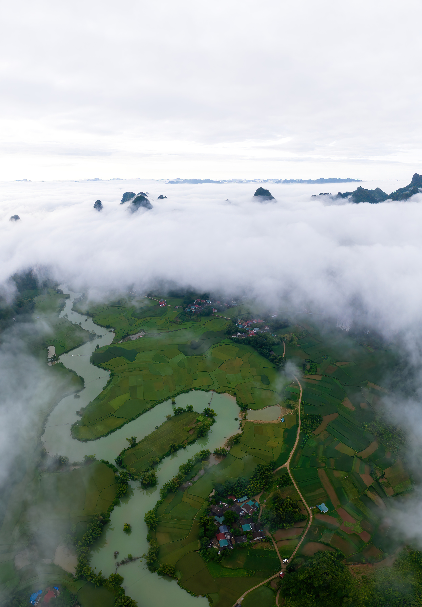
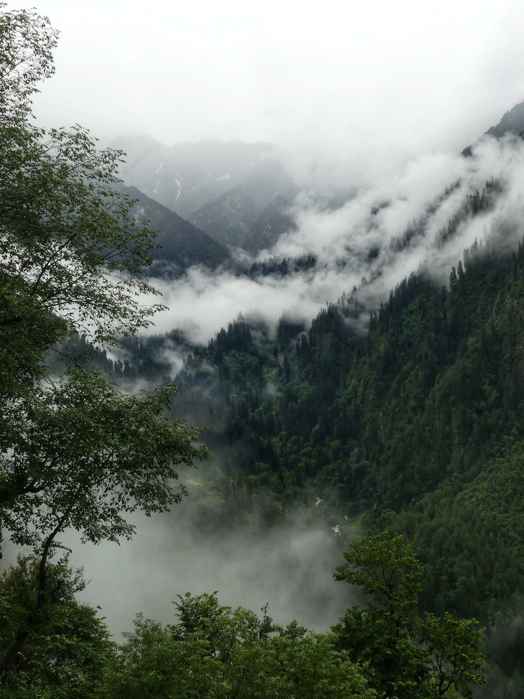
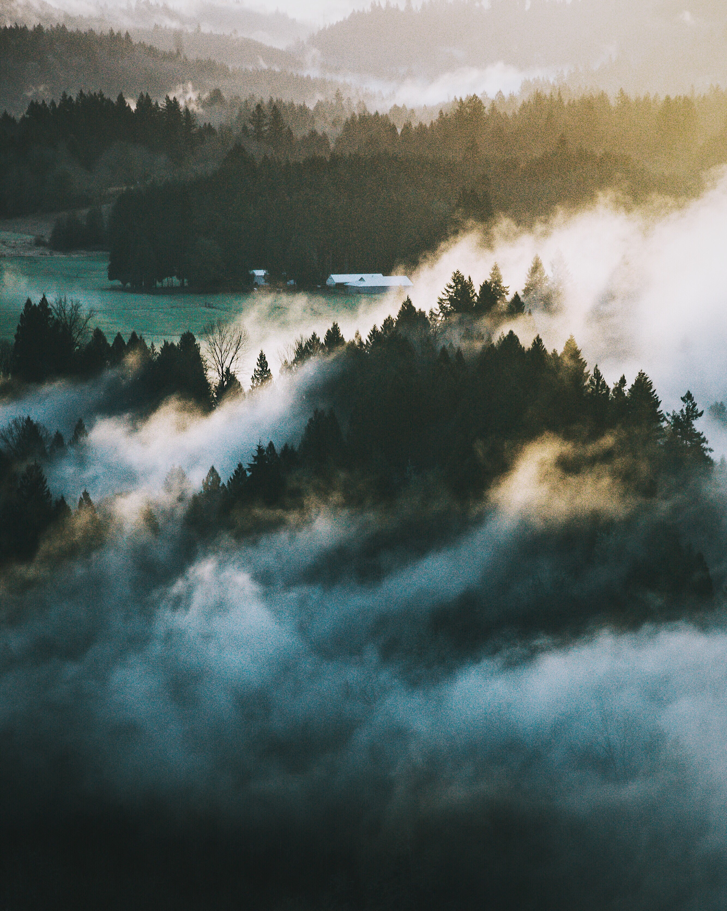

Time to Travel
The best time to visit Rocky Mountain National Park is from June to September when the snow is melted and the hiking trails and attractions are accessible. The Crown Jewl of Rocky Mountain NP, Longs Peark is one of the most coveted summits in the West
Popular Tours

Tour 1

Tour 2

Tour 3

Tour 4

Tour 5
“Have you ever heard an avalanche roar in the mountains? Just after the avalanche roars, and there is absolute silence. You stop understanding where you are - that's 100% quiet. Just very quiet.”
- DAVID HOANG